Vous facturez.
Votre comptable ne ressaisit rien.
Votre entreprise fait ses devis, ses factures, ses achats et sa paie dans SkanFact. À la fin du mois, un seul fichier chiffré part chez votre cabinet — avec les pièces et les écritures comptables déjà écrites. Le comptable l'ouvre dans SkanFact Cabinet, vérifie, complète et déclare. Sans retaper une ligne.
Mac et Windows · aucun compte à créer · vos données restent chez vous

Chez vous. Vous émettez vos factures.
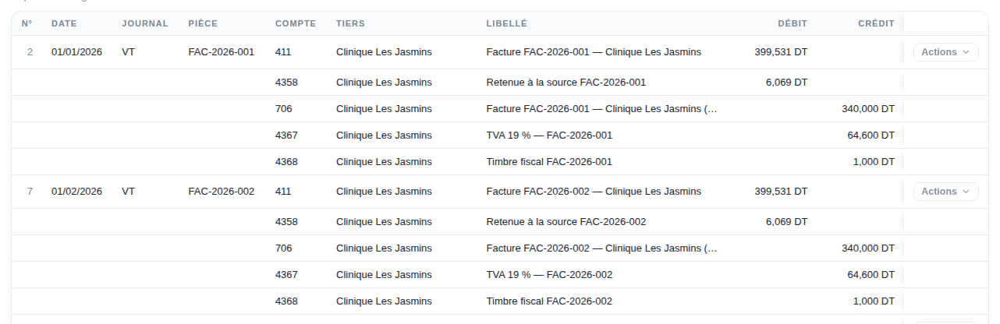
Chez lui. Elles arrivent déjà en écritures.
Par où commencer
Vous n'êtes pas venu pour la même chose.
Un chef d'entreprise cherche à facturer sans se tromper. Un expert-comptable cherche à tenir soixante dossiers sans ressaisir. Ce sont deux produits, et deux pages.
SkanFact
Devis, factures, relances, achats, stock, trésorerie, paie. Le timbre fiscal, les quatre taux de TVA et la retenue à la source sont déjà dedans.
- Vous n'avez jamais besoin de connaître un numéro de compte
- Chaque champ porte une bulle qui l'explique
- Le dossier du mois part chez votre comptable d'un bouton
SkanFact Cabinet
Un logiciel de tenue complet : plan SCE, saisie, banque et lettrage, TVA, inventaire, clôture d'exercice, états financiers, liasse et révision.
- Vos dossiers hors SkanFact se tiennent ici comme ailleurs
- Ceux qui sont sur SkanFact arrivent déjà écrits, avec leurs pièces
- Gratuit sans limite pour les vingt premiers cabinets
Ce qui n'existe nulle part ailleurs
Le trait d'union est le produit.
Un logiciel de facturation, il en existe. Un logiciel de comptabilité, aussi. Ce qui n'existe pas, c'est le chemin sans ressaisie entre les deux, écrit pour la fiscalité tunisienne.
L'entreprise clôture son mois
Elle a facturé, encaissé, saisi ses achats. Elle clôture, et n'a plus qu'un bouton : « Envoyer au cabinet ».
Un fichier chiffré part
Les PDF, les journaux, les justificatifs, et les écritures déduites des pièces. Chiffré pour ce cabinet-là, et pour personne d'autre.
Le cabinet ouvre ses livres
Les écritures entrent dans son livre avec leur source et leur pièce. Il ajoute les siennes, rapproche, lettre, déclare et clôture.
Ce n'est pas une formule commerciale : c'est un test qui doit passer avant chaque publication. Les douze paquets du jeu d'exemple sont importés dans l'application du cabinet, et sa balance est comparée à celle calculée par l'application de l'entreprise sur les mêmes données. Si les deux diffèrent d'un millime, la version ne sort pas.
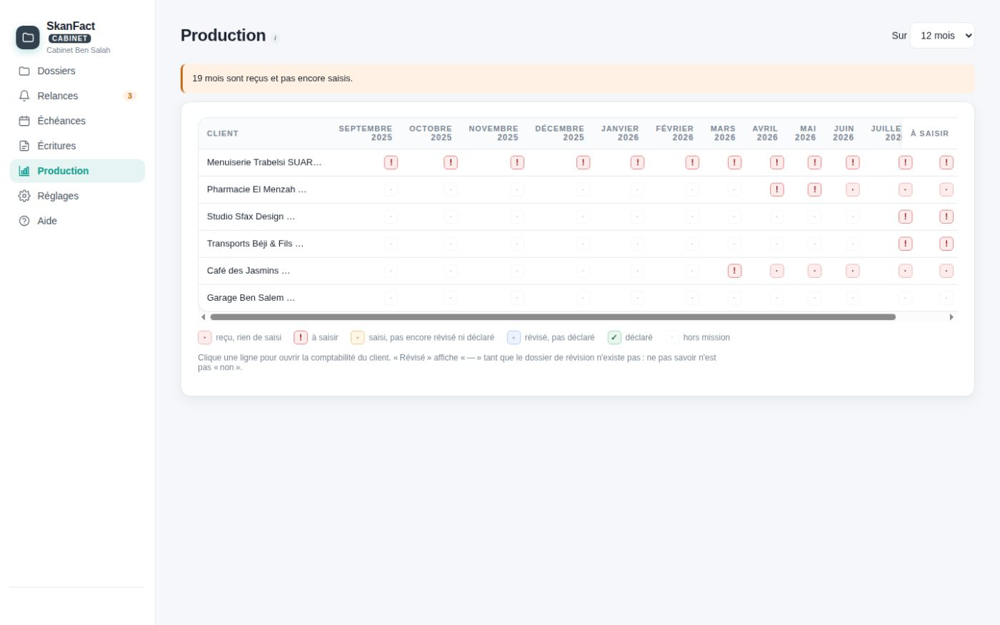
Le mois de chaque client, d'un coup d'œil : reçu, à saisir, saisi, révisé, déclaré.
Côté entreprise
Du devis à la facture, en dix écrans.
Ce ne sont pas des maquettes. Chaque image a été prise dans l'application, en la pilotant pour de vrai : les montants affichés sont ceux qu'elle a calculés, et le document du dernier écran est celui qu'elle a produit.
-
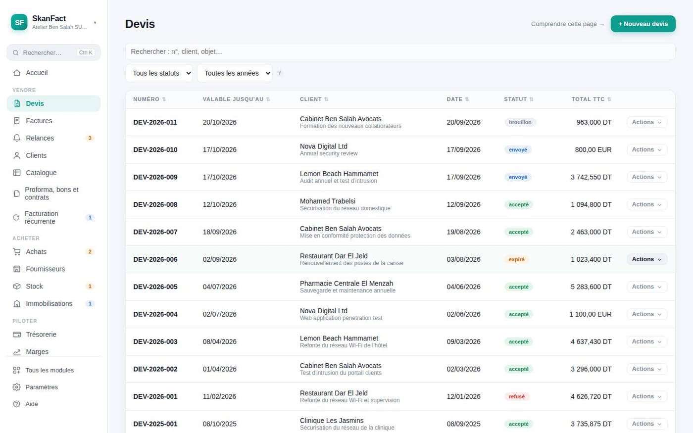
1La liste des devis On part de là : tous les devis, leur client, leur montant, leur état. -
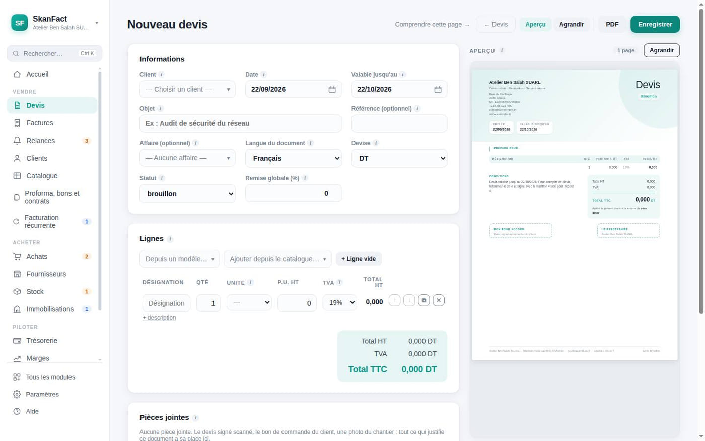
2Un devis neuf Rien à configurer. La date, l'échéance et la devise sont déjà posées. -
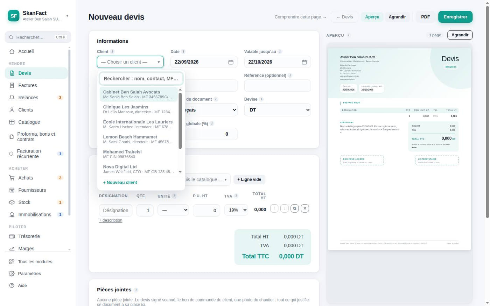
3Le client Il se cherche au nom, au contact ou au matricule fiscal. -
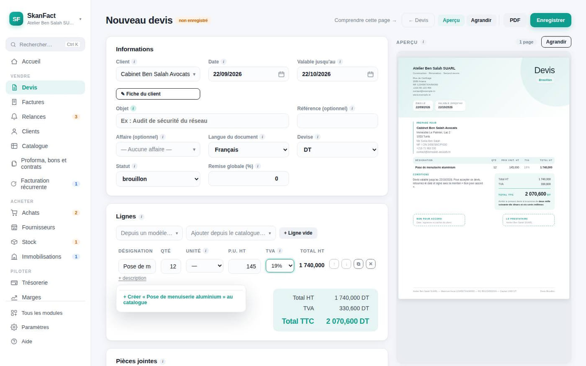
4Une ligne Douze poses à 145 dinars. Le total de la ligne suit la frappe. -
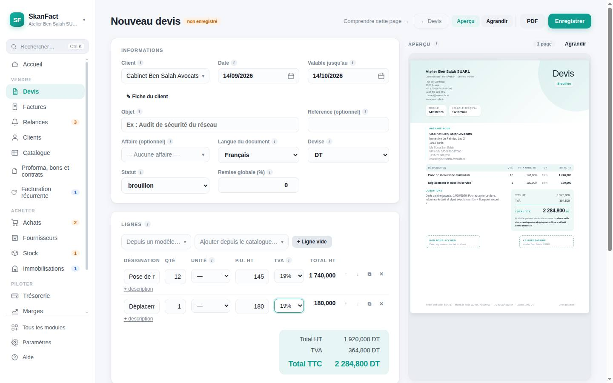
5La TVA se ventile Par taux, ligne à ligne. Et le document se dessine à droite pendant que vous tapez. -
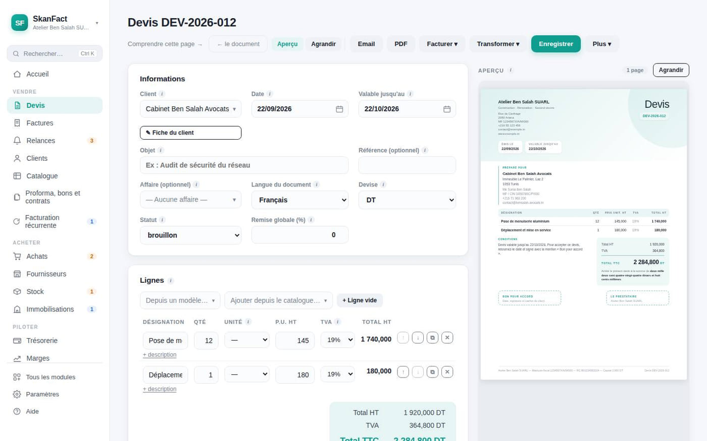
6Numéroté À l'enregistrement, et plus jamais après : un numéro ne désigne qu'un contenu. -
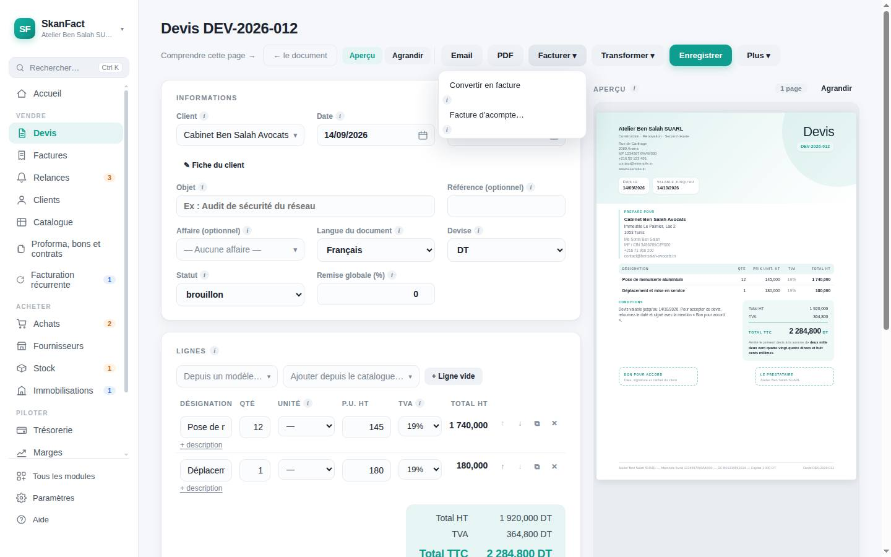
7Facturer En totalité, ou en n'émettant qu'un acompte : les deux chemins sont là. -
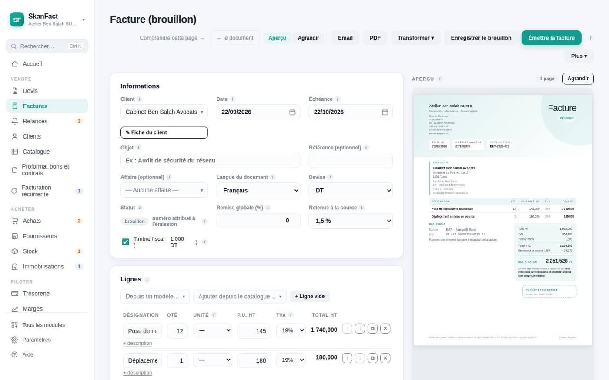
8La facture Elle reprend tout : le client, les lignes, les taux, l'affaire. Rien à retaper. -
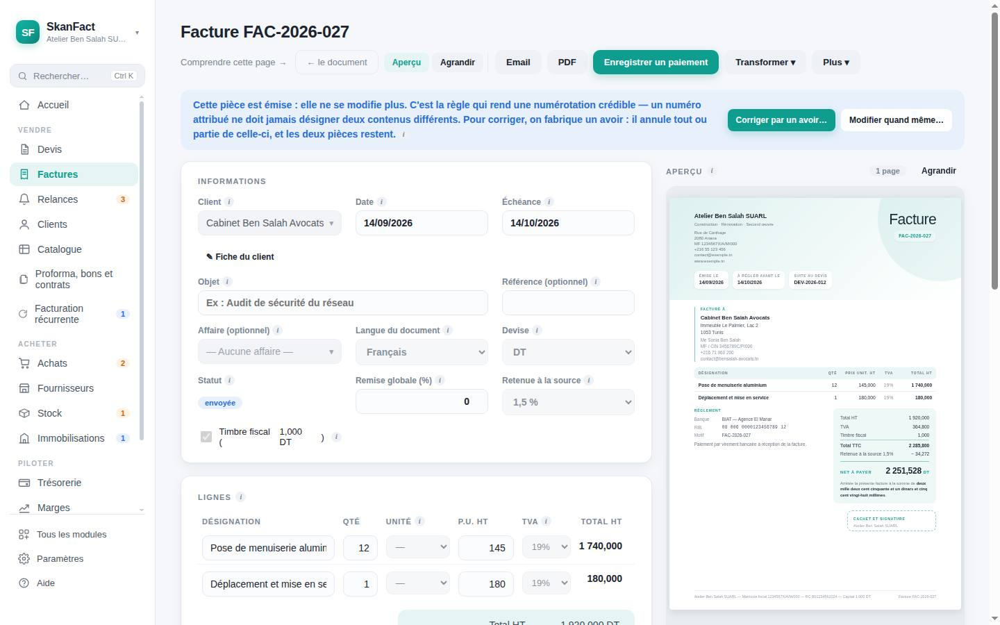
9Émise Numérotée, verrouillée, le timbre fiscal posé et la retenue à la source déduite. -
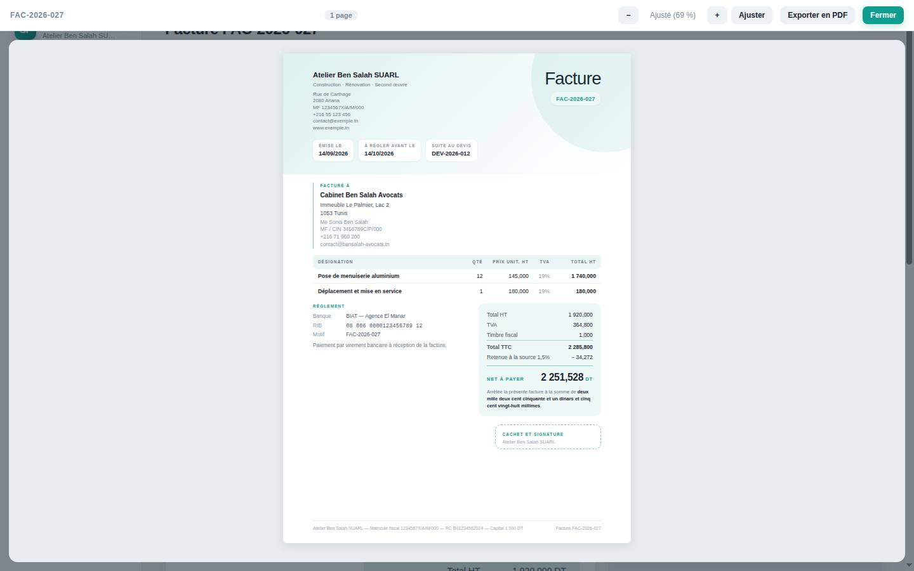
10Le document Tel que votre client le recevra : mentions, montant en lettres, cachet.
Côté entreprise
Trois pages, trois questions.
Vous n'êtes pas obligé de tout lire pour savoir si l'application répond à la vôtre.

Le devis se transforme en facture d'un clic. Les statuts « payée », « partielle », « en retard » se déduisent des règlements : vous n'avez rien à cocher.
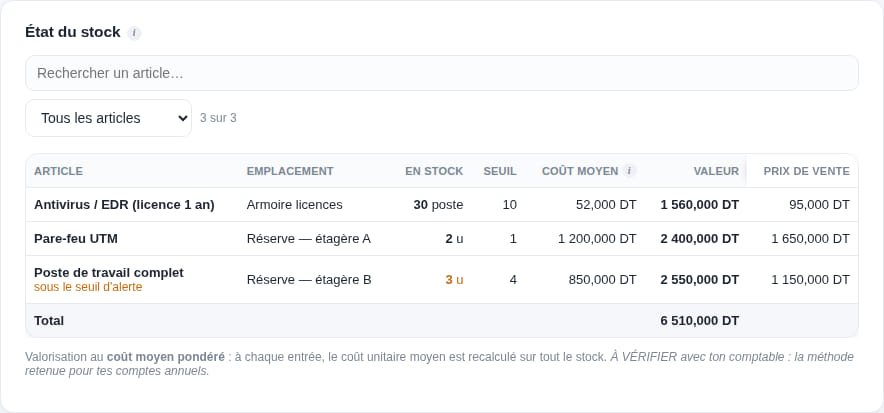
Ce que vous achetez, ce qu'il vous reste sur l'étagère et ce qu'il a coûté, ce que vous gagnez vraiment, et votre trésorerie projetée sur ce qui est déjà engagé.

Timbre fiscal, TVA à quatre taux avec report de crédit, retenue à la source, échéances : appliqués, et expliqués au moment où ils servent.
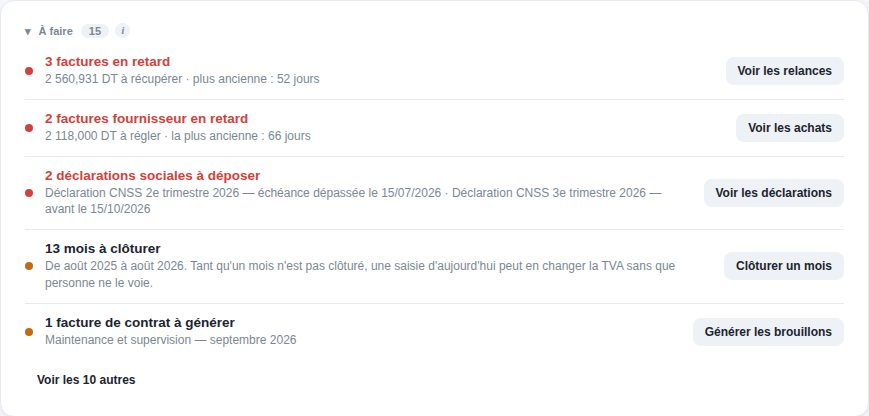
En ouvrant le matin : les impayés, les devis sans réponse, les contrats à facturer, les déclarations qui approchent. Rien à cocher — tout se déduit de vos pièces.
Côté cabinet
Un logiciel de tenue, pas un lecteur de fichiers.
SkanFact Cabinet tient un dossier de bout en bout, que le client soit sur SkanFact ou non. Un cabinet a soixante clients, dont deux ou trois sur SkanFact : le logiciel serait inutile s'il ne savait traiter que ceux-là.
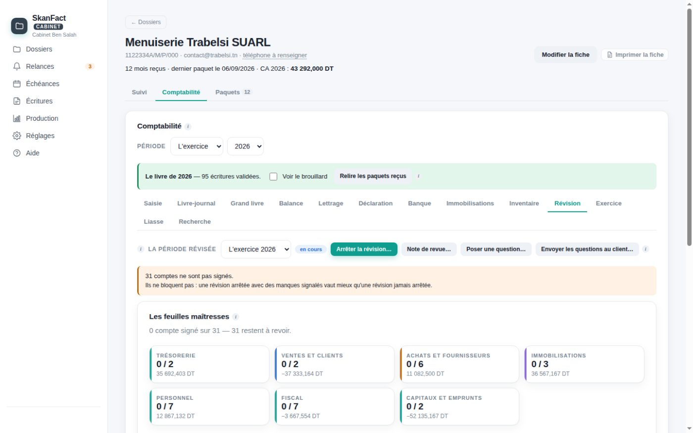
Le premier jour
Vous n'avez pas besoin de savoir pour commencer.
Un assistant pose les questions dans l'ordre, propose le catalogue de votre métier et le régime fiscal qui va avec. Vous pouvez tout changer ensuite.
- 1Votre société
Nom, matricule fiscal, activité. Cinq écrans.
- 2Votre métier
Il propose vos prestations et votre régime fiscal.
- 3Votre client
Un nom et une adresse suffisent pour commencer.
- 4Votre devis
Vous le voyez se dessiner pendant que vous tapez.
- 5Votre facture
Un clic depuis le devis que le client a accepté.
Vos données
Elles sont chez vous, et elles y restent.
Ni SkanFact ni SkanFact Cabinet ne sont des sites web où l'on se connecte : ce sont des applications installées sur un ordinateur. Vos factures, et les dossiers de vos clients, sont des fichiers que vous pouvez copier.
Rien à créer
Pas de mot de passe à retenir, pas de serveur qui garde vos chiffres, pas d'abonnement qui coupe l'accès du jour au lendemain.
De sauvegardes
Une copie de l'état de chaque matin est conservée un mois, plus une copie miroir vers le dossier de votre choix — clé USB, iCloud, disque réseau.
Tout fonctionne
La connexion ne sert qu'aux mises à jour et à l'envoi d'un email, quand vous le demandez. Une coupure n'arrête pas votre facturation.
Le code des deux applications est public. N'importe qui peut vérifier ce qui tourne sur son ordinateur, et constater qu'aucune donnée ne part ailleurs. C'est rare pour un logiciel de facturation, et plus rare encore pour un logiciel de comptabilité.
Tarifs
Vous payez la licence, jamais le droit d'ouvrir vos données.
Une licence annuelle. À l'échéance, seule la création de nouvelles pièces s'arrête : lire, imprimer, exporter et sauvegarder restent possibles pour toujours.
Côté cabinet : SkanFact Cabinet est gratuit et sans limite de dossiers pour les vingt premiers cabinets, définitivement. Ensuite : gratuit pour tout dossier dont l'entreprise a une licence SkanFact, plus trois dossiers de plus, pour toujours. Au-delà, il se paie par dossier, jamais par poste ni par collaborateur.
Essayez-le sur vos vraies pièces.
Trente jours, toutes les fonctions, sans carte bancaire. Si l'application ne vous convient pas, vous n'avez rien donné à personne.
Mac et Windows · aucune carte bancaire · vos données restent chez vous